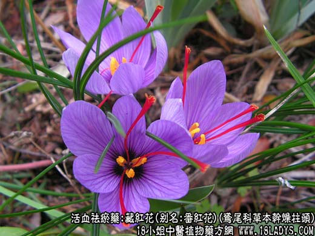
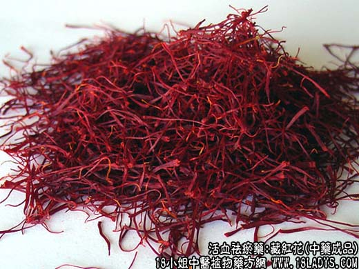

【中药概述】
藏红花，别名：番红花、西红花，为鸢尾科草本植物番红花的干燥柱头。甘、平。入心、肝经。
活血养血，化瘀生新。主治血滞月经不调、产后恶露不行、跌打损伤、瘀血作痛、心忧郁积、胸肋胀闷。
【药物形态】
本品呈线形，三分枝，长约3cm。暗红色，上部较宽而略扁平，顶端边缘显不整齐的齿状，内侧有一短裂隙，下端有时残留一小段黄色花柱。体轻，质松软，无油润光泽，干燥后质脆易断。气特异，微有刺激性，味微蕾。
【药效鉴别】本品功效同红花，有凉血解毒，治温病，热入营分，斑疹不退。可用于温病热入血分及斑痧大热等症。
【药理作用】 1.对子宫有兴奋作用。2.对气管、血管、肠管平滑肌有兴奋作用。
【化学成分】 含藏红花素、藏红花酸、藏红花醛、糖类、氨基酸等。
【用量用法】 3——10g，水煎服，或入剂。
【注】如何鉴别番红花的真伪优劣：番红花由众多扁平的柱头压集而成，柱头红棕色，顶端较宽大，向下渐细，在放大镜下顶端边缘为不整齐的齿状，并有绒毛状突起。入水浸泡，柱头膨胀呈长喇叭状，水被染成黄色，水面不应有油状物漂浮，水不显红色，用棒搅动不易碎断，否则是伪品。番红花以身干、身长，花丝少，色紫红，味辛凉者为佳。
本文解释权归介绍中草药名称的中药大全所有，本文地址：https://www.daquan.com/post/1992.html